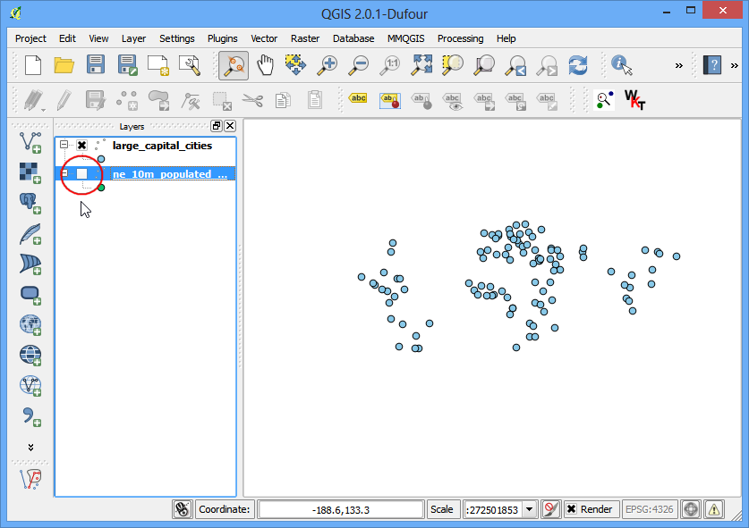
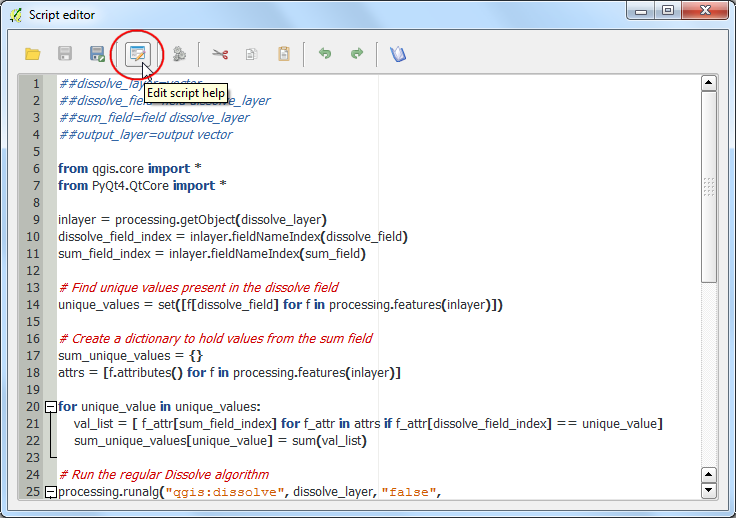

Noțiuni de Bază despre Analiza și Stilizarea Rasterelor
[ Download PDF A4 Letter ]
Multe activități de cercetare și observare științifică generează seturi de date raster. Rasterele sunt, în esență, grile de pixeli, cărora le este atribuită o anumită valoare. Prin efectuarea de operații matematice cu aceste valori, vor rezulta analize interesante. QGIS are unele capabilități interne de analiză, accesibile prin intermediul Raster Calculator. În acest tutorial, vom explora elementele de bază cu privire la utilizarea Raster Calculator și opțiunile disponibile pentru stilizarea rasterelor.
Privire de ansamblu asupra activității
Vom folosi datele privind densitatea populației, pentru a găsi și a vizualiza zone ale lumii, care au suferit schimbări dramatice în densitatea populației între 1990 și 2000.
Alte competențe pe care le veți dobândi
Obținerea datelor
Vom folosi setul de date Gridded Population of the World (GPW) v3 Universității Columbia. În mod specific, avem nevoie de densitatea populației pentru întregul glob, în format ASCII, și pentru anii 1990 și 2000.
Iată cum să căutați și să descărcați datele revelante.
Mergeți la Population Density Grid, v3 download page. Alegeți formatul .ascii, rezoluția 1° și anul 1990 pentru Data Attributes. Faceți clic pe Download. În acest moment, puteți crea un cont gratuit, apoi să vă conectați, sau să folosiți butonul Guest Download din partea de jos, pentru a descărca imediat datele. Repetați procesul pentru datele anului 2000.

Acum aveți descărcate 2 fișiere zip.
For convenience, you can also download a copy of this data by clicking on following links:
gl_gpwv3_pdens_90_ascii_one.zip
gl_gpwv3_pdens_00_ascii_one.zip
Sursa de date [GPW3]
Procedura
Deschideți QGIS și mergeți la .

Localizați fișierele zip descărcate. Țineți apăsată tasta Ctrl și faceți clic pe ambele fișiere zip, pentru a le selecta. Astfel, le veți putea încărca într-un singur pas.

Fiecare fișier zip conține 2 fișiere grilă. Litera a din numele fișierului sugerează că valorile corespunzătoare populației au fost ajustate pentru a se potrivi cu totalurile ONU. Vom folosi grilele ajustate, pentru acest tutorial. Selectați glds00ag60.asc ca strat de adăugat. Clic pe OK.

Stratul nu are un CRS definit, și din moment ce grilele sunt în lat/long, alegeți EPSG: 4326 ca sistem de coordonate de referință.

Din moment ce am selectat ambele fișiere zip, veți vedea, încă o dată, ferestre de dialog similare. Repetați procesul și selectați grila glds90ag60.asc, pentru a fi adăugată ca strat.

Încă o dată, alegeți EPSG:4326 ca CRS.

Acum, veți vedea ambele rastere încărcate în QGIS. Rasterul este redat în tonuri de gri; pixelii întunecați indicând valorile mai mici, iar cei deschiși valorile mai mari.

Fiecare pixel din raster are asignată o valoare. Această valoare reprezintă densitatea populației din grila respectivă. Faceți clic pe butonul Identify Features pentru a selecta instrumentul, apoi faceți clic oriunde pe raster, pentru a vedea valoarea pixelilor.

Pentru a vizualiza mai bine modelul densității populației, ar trebui să-l stilizăm. Faceți clic dreapta pe numele stratului și selectați Properties. Puteți efectua, de asemenea, dublu-clic pe numele stratului din Cuprins, pentru a deschide fereastra de dialog Layer Properties.

Sub fila Style schimbați Render type pe Singleband pseudocolor. Apoi, efectuați clic pe Classify de sub Generate a new color map. Veți observa valorile a 5 noi culori. Apăsați OK.

Înapoi, în suportul hărții din QGIS, rasterul va fi redat asemănător unei zone fierbinți. Repetați aceeași procedură și pentru cealalt raster.

Pentru analiza noastră, ne dorim să găsim zonele cu cea mai mare schimbare a populației între 1990 și 2000. Acest lucru se face prin găsirea diferenței dintre valorile pixelilor din grilele celor două straturi. Selectați .

În secțiunea Raster bands, puteți selecta stratul efectuând dublu-clic pe numele lui. Benzile sunt denumite după numele rasterului, urmat de @ și de numărul benzii. Din moment ce fiecare dintre rasterele noastre au doar 1 bandă, veți vedea doar 1 intrare pe raster. Calculatorul raster poate efectua operații matematice asupra pixelilor din rastere. În acest caz, dorim să introducem o formulă simplă pentru a scădea densitatea populației anului 1990 din cea a anului 2000. Introduceți formula glds00ag60@1 - glds90ag60@1. Denumiți stratul de ieșire ca pop_density_change_2000_1990.tif și bifați caseta de lângă Add result to project. Apoi faceți clic pe OK.

O dată ce operațiunea este completă, veți vedea noul strat încărcat în QGIS.

Această vizualizare a tonurilor de gri este utilă, dar putem crea o ieșire mult mai informativă. Faceți clic dreapta pe stratul pop_density_change_2000_1990 și selectați Properties.

Vrem să stilizăm stratul în așa fel încât valorile pixelilor, cuprinse în anumite game, să aibă aceeași culoare. Înainte de asta, mergeți la fila Metadata și uitați-vă la proprietățile rasterului. Notați valorile minime și maxime ale acestui strat.

Acum, mergeți la fila Style. Selectați Singleband pseudocolor pentru Render type din secțiunea Band Rendering. Setați Discrete pentru Color interpolation. Faceți clic pe butonul Add entry de 4 ori, pentru a crea 4 clase unice. Faceți clic pe o intrare pentru a modifica valorile. Harta de culori lucrează în așa fel, încât toate valorile mai mici decât valoarea introdusă vor avea culoarea acelei intrări. Având în vedere că valorile minime din rasterul nostru sunt mai mari de -2000, vom alege -2000 ca primă intrare. Acest lucru va fi valabil pentru valorile No Data. Introduceți valorile și etichetele pentru alte intrări, la fel ca în imaginea de mai jos, și faceți clic pe OK.

În acest moment, veți vizualiza mult mai bine zonele care au înregistrat schimbări pozitive sau negative în densitatea populației. Faceți clic pe butonul Zoom In și glisați, realizând un dreptunghi deasupra Europei, pentru a explora regiunea în detaliu.

Selectați instrumentul Identify și faceți clic pe regiunile Roșii și Albastre, pentru a vă convinge că regulile de stilizare lucrează așa cum vă așteptați.

Acum, haideți să ducem această analiză cu un pas mai departe și să găsim doar zonele cu densitate negativă a populației. Deschideți .

Introduceți expresia pop_density_change_2000_1990@1 < -10. Această expresie va seta valoarea pixelului la 1 în cazul satisfacerii expresiei, sau la 0 în caz contrar. Asa că vom obține un raster ai căror pixeli vor avea valoarea 1 acolo unde schimbarea a fost negativă, și 0 acolo unde nu a fost negativă. Denumiți stratul de ieșire ca negative_pop_change_2000_1990 și bifați caseta de lângă Add result to project. Faceți clic pe OK.

O dată ce noul strat a fost încărcat, efectuați clic dreapta pe el și selectați Properties. În fila Transparency, adăugați 0 ca Additional no data value. De asemenea, această setare va face pixelii cu valoarea 0 transparenți. Clic pe OK.

Veți vedea că ariile cu densitate negativă a populației sunt alcătuite din pixeli gri.